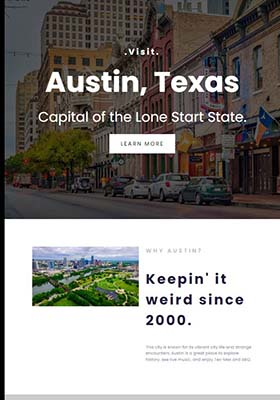
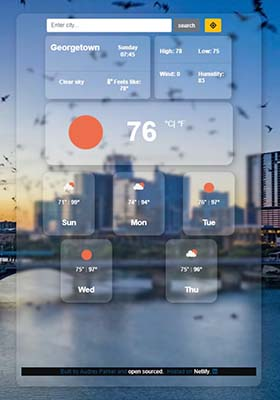
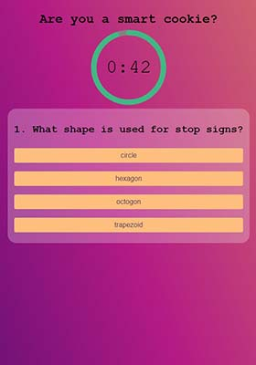

Audrey Parker
Educator
Teaching has been my passion for five years, however I am pursuing higher passions by moving into tech. I earned a certificate in web development with React fromSheCodes. I attended Texas State Technical College to obtain education in Computer Programming. Here I dove deep into programming languages and learned everything I know now.
Featured Projects
View selected projects below. More information can be found at https://audreyparker.netlify.app/.
Visit Austin, Texas
I built this website to share some of my favorite things about Austin. This is a very special project to me as I got to highlight some things I love from my local area. For this project I utilized several CSS strategies, bootstrap,
View projectWeather Application
This is a weather application that I build in July of 2023. I utilized Javascript and an API to obtain weather information for searched cities and local to the user.
View projectWeather Application
This is a simple trivia app that I created to explore certain Javascript elements. I utilized a countdown timer and button interactions. I hope to enhance this in the future for a more entertaining user experience.
View projectWork Experience
Teacher
Georgetown ISD
August 5, 2024-Present
Educate students in english language arts and social studies. Destination Imagination coach.
Teacher
Edgewood ISD
January 5, 2021-June 3, 2024
Educate students in all subject areas. Robotics coach.
Education
Texas State Technical College- Waco
Computer Programming
University of Texas at San Antonio
Bachelors of Arts- Early Childhood Education - 6th
Graduated with honors- Magna Cum Laude.